心理暴力 @ Jan 11, 2010
法国将成为世界上第一个认定夫妻或同居者之间的“心理暴力”为犯罪的国家。新法律囊括了各种各样的侮辱，其中包括没完没了地讽刺挖苦对方，毫无根据地指责对方撒谎以及威胁要动手打对方等等。警方第一次会给出警告，再犯会处以罚款、拘留甚至被判入狱。下次骂对方是猪头的要小心了。。。。（原文来自《新周刊》）
法国将成为世界上第一个认定夫妻或同居者之间的“心理暴力”为犯罪的国家。新法律囊括了各种各样的侮辱，其中包括没完没了地讽刺挖苦对方，毫无根据地指责对方撒谎以及威胁要动手打对方等等。警方第一次会给出警告，再犯会处以罚款、拘留甚至被判入狱。下次骂对方是猪头的要小心了。。。。（原文来自《新周刊》）
躺被窝里看了三部电影已经到了下午2点，急忙起床赶去选植物，作为送给扑土店开业的礼物。我自信满满的以为我的车可以装得下一棵树，结果那株象小树一般高的滴水观音，尝试多种装运方式无果后，干脆租了辆小面包车将“树”拖到店里。
这间In CafeTB实体店比我想象中要大许多，还需要更多的商品来填充，也比我想象得要生动，白墙绿窗的简单装修，使其看上去倒有几分欧洲简约风格，虽然那里面多为日式商品。之前我总觉得日式餐具器皿不够大气，今天买回来之后摆在桌上把玩，发现它们令生活忽然生动起来，小巧可爱，温馨又甜蜜。看着它们，恨不能赶紧烧壶水，泡杯茶，幻想着学会冲泡奶茶之后，动作利落老练地在厨房里操作这些小东西，有了它们大概在餐厅里消磨一个下午也不会感觉枯燥，太让人期盼了！
今天这些小东西都属于我了。并且我把拆下的气泡袋集中起来，等下次去店里买东西还能包装用。
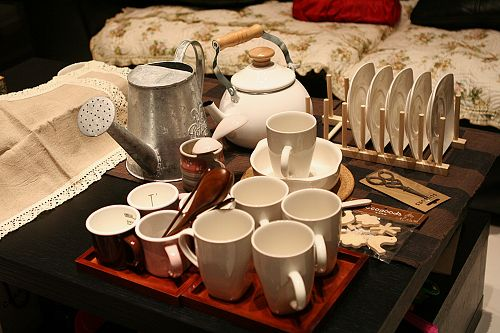
好爱这只搪瓷壶，木质把手和壶盖，一下子就区别于其它的水壶了。还有红色款，但我坚定地选了白色。为这只心爱的壶配了只垫子，摆放在茶几上也不怕。
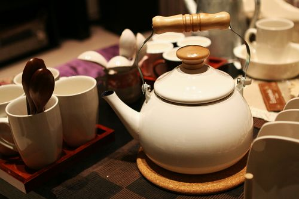
复古剪刀与冰箱磁铁，现在很流行复古的玩意儿，虽然我很少做针线活，但可以收藏一把，时常拿出来抚摩观赏，等以后退休有时间了做布艺手工用。

这是我最满意的盘架，首先环保，其次很适合架盘子。我打算把在宜家买的中看不中用的盘架淘汰掉，换上这样的盘架，不同形状的盘子都可以被整齐的架起来，这样从餐边柜透明玻璃门看进去会多么地赏心悦目啊，所以还需要几个这样的盘架。

选了咖啡色和粉红色搪瓷缸，这两种颜色搭配在一块儿很时尚的感觉,喝喝饮料很不错。盛杯子的木托盘既方便又实用，有不同尺寸的。

=======================IN CAFE实体店======================
画面只展示了一半的店面，如果一半用来供咖啡奶茶和甜点，和朋友在这里消磨几个小时也不错。
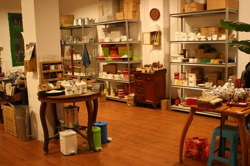
这是我计划购回的锅，等有透明盖子的新货来，目前最钟情右边那只咖啡色的。

透明玻璃的小奶瓶，好有细节啊。早晨在餐桌上为每位亲爱的家人准备一只这样的瓶子，装上酸奶或鲜牛奶，除了食欲还会涌上无法克制的占有欲。以及那些棉麻的餐垫买回家摆放在客厅茶几上，上面放茶杯用品还挺出彩的。
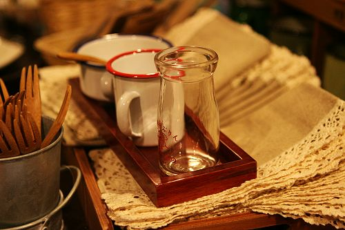
老式相机，以及手动打字机，这些被时代和科技淘汰的用品，却为IN CAFE增添了一些怀旧气息。我刚进公司那会儿，公司还在使用手动打字机，真应该在公司淘汰的时候搬回家做装饰用。
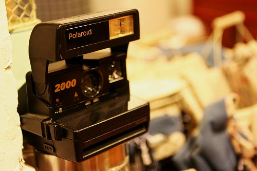
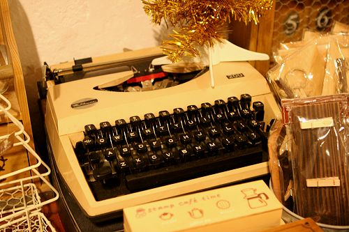
此时，我们已经很少会看见卖扣子，尤其这么多扣子一起出现在商品中，当然也许出售的只是那些玻璃瓶。事实上我很需要一只这样的玻璃瓶，因为那些新衣服上的配扣都被我塞在不同的容器里，天晓得在需要的时候该怎么找到它们？

1000多元的铜壶，嫌贵吗？想买也买不到，非售卖品，是扑土心爱的壶。
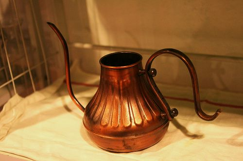
它们很适合存放袋装茶与袋装咖啡，适合那些小巧又温馨的单身公寓。
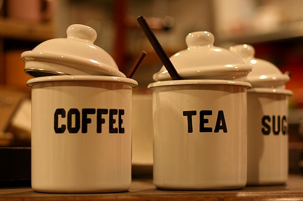
IN CAFE的电话，非售卖品。

墙上那面钟不晓得卖不卖？
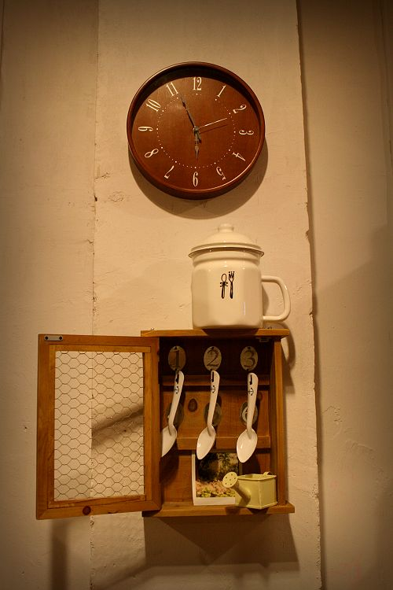
土豆也来拜访IN CAFE了，还吃了大惊喜小姐送的宜芝多蛋糕。

为朋友准备的温暖角落，注意那座沙发，是儿童床改造滴。

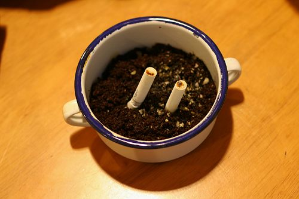
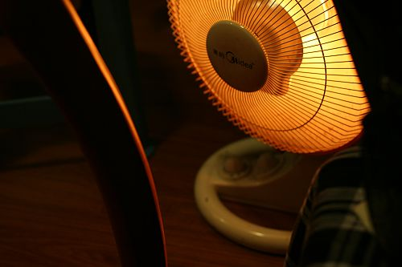
今夜是《花木兰》和《The International》。后者的女主角是《金刚》里的那位女演员，冲着她看的，看完知道世界有多黑，有人的地方就有黑暗。看完《花木兰》想到一句歌词：爱到深处，人孤独。
《花木兰》提升了赵薇、陈坤给我的印象，虽然赵薇的声线表达没多少改观，但演技还是有喜人之处。战争中的爱情，就是靠着压抑着的孤独的爱打动人，共同经历了十二年的苦难，回归太平社会又不得不牺牲彼此的愿望来换取和平，大爱无声！好象前面3／4都是铺垫，就为了末了，让人哭得稀里哗啦…能打动人的电影就是好电影。有人说“爱，只有时间和生死可以证明。”可是，现代人，还知道什么是爱吗？
囧有3000岁了--早在3000多年前“囧”是非常普遍的偏旁部首，西周毛公鼎上的“明”字就写成“朙”。这里‘囧’寓意为有瓦的窗户，月亮透过有瓦的窗户就明了。”（信息来源：《新周刊》）
这么有意境的字被现代人糟蹋了，就象被猥琐男糟蹋的小姑娘一样，囧！

这会儿脑子里已经想不起来还有哪些工作要做，举着袋子吃咖啡豆，不对，是咖啡味的豆子，好吃。想着晚上看哪部电影，昨晚第6集里的哈利波特已经老了，故事还是没结束，留着第7集钱慢慢赚。连续几个晚上睡觉前看一部电影，娱乐自己放松神经，就象小原子手工制作围裙，也是娱乐方式的一种，有声色的生活还是看人滴！
小原子制作的围裙，针脚和大牌衣衣的手工有得一拼，间距大小一致，针脚细密，围裙上的商标令人叹为观止。我说小原子，你能帮我做件带袖子的围裙吗？“难度大，我给你买一条得了。”倒！“这围裙就是给准备下午茶的人使用的。”那么，等我学会磨咖啡冲奶茶，一定送我一条有情调的围裙哦！
话说中午又一块儿腐败了，主题是送别低碳人士。认识她之前我不知道“低碳”两字，一个OUT的人如今也能列举有关低碳生活方式一二三呢。听说哥本哈根的大会开的不成功，回来也不跟我们韶韶！饭桌上6人，其中4人是大巴用户，这会儿大巴歇了，没有博的生活是不是不适应啊？我们还有围脖可以织，这会儿我要笑了，免费的就是没保障，没准儿某一天围脖也可能被河蟹咯！目前的生活是相当地满足，平静中的快乐，好甜蜜。
组图里的大家，那两枚厨娘让我们嫉妒死，瞧她们乐的~
我家烧油腻食品多，没有带袖子的围裙给两护袖也可以，实用为先。

好爱这张的表情。

惊讶吧？！围裙上的小商标。

据说小原子做这个香包把家里的一包薰衣草茶全倒进去佬...还狠心剪下一把绢花中一只！猜想送给大家每人一包，家里的绢花岂不要全秃了？没关系，我们再送新的给你！
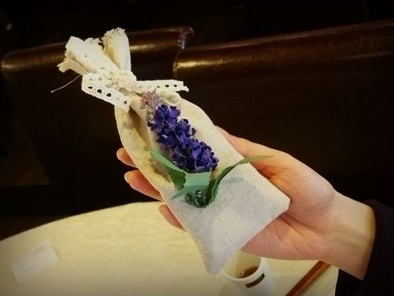
混迹于环保界的伪气候组织成员，右边是手工大师小原子。据说她做的奶茶比香港地道的丝袜奶茶还好喝呢~

为了你们，我只好牺牲自己的形象了，泪奔~以后得侧90度与小脸合影。
身上这件衣服的色标写着“咸菜色”，当时就想跑去告诉咸菜等人，还没等我说出口，咸菜和低碳便已脱口而出。

昨晚早早躺被窝里看Beyonce在拉斯维加斯的演唱会，准备看看美女，养养眼，就睡。Beyonce的表演很有暴发力和韧性，这么一个尤物，场内女歌迷居多，表演进行到中段就能确定她是典型的美国女权主义者！以及，无论肥瘦高矮平胸还是波霸，只要自信就是美！看看她的表演团队就不难理解！Beyonce嫁给JAY－Z也蛮符合她独立自主的行事风格！演唱会上的她俨然女性励志导师！表演很投入，人比歌儿讨喜！
今天轻微酷一把。


新年第二天补了5颗牙，错误的刷牙方式造成的问题。惊讶吧？赶紧谷谷一下正确的刷牙方式，以及转达医生的建议：尝试用儿童牙刷吧，虽然效率低，但是既轻柔又能刷到最里面的牙，并且在嘴角位置上下刷也有空间。大忽悠小姐的建议是：赶紧用电动牙刷啊，怎么还不用电动牙刷呢？这5颗牙正好位于嘴角两边，因为上下刷不方便就偷懒横着刷，长年累月横着刷它们，结果牙根被刷出来了，我伺候这口牙还真卖力啊。。。都怪俺娘吃的四环素，害得俺这牙怎么刷都白不了，还刷出了问题！这是牙齿美容都解决不了的属于70年代生人的老大难问题。
新年第三天的晚上，在又一次诚挚地召唤下，我还是精心打扮一番去赴听歌会的。好久没去酒吧，怎么着也要端正一下态度，结果在寒风中就穿了件衬衣和大衣的我以及我们苦等近一小时，门口的长队才有往门内蠕动的迹象。这是一个我不认识他他也不认识我的美国民谣歌手，整场听下来还不错，只是没有各女友的魅力大，大到我们热烈地聊天哈哈大笑被人训斥。。。好歹也是一次体验，这难得相见的兴奋感完全淹没了帅哥歌手的吸引（默默的说一句：前天不是才见面的么）。
那个极其卡哇伊的女生，灰常灰常卡哇伊，yeah~
还有两位女友在相机后面儿。

额滴神呐，烦不了了，手机、卡片机的效果差不到哪儿去挖，至少知道左边那个是卡哇伊，右边那位是知性又随和的大S。只有用她们的头挡住我那张大圆脸，才敢和小脸MM一起合影啊！以及怀疑我那SONY卡片机的设置有问题，画面颗粒多。

定了早晨7点的闹钟，准备赶个早儿去口腔医院看看那颗吃东西既感到冷又感到酸的牙齿，假期的早晨，起床的毅志力总是很薄弱，7点钟被放弃了。
可是8点半在手机上看过问问昨晚的新博《当肉食家遇上肉》，颇受鼓舞，立刻起床更新茶。要是工作日的早晨也有这样的起床速度该多好！
老父亲一星期前在电话里说：“今天你妈妈带我去新开业的万达广场，在河西金盛装饰城对面，好大的商场啊，我们元旦一起去，好吗？”于是我们一家人元旦在万达顶楼一起吃午餐，年纪大了的人越来越象孩子，当我老了，我一定随遇而安，不逞强不好胜，享受生活为主。
晚上7美见面会，本以为是8美，惟独缺了传说中的小原子。等了半个多小时才进入停车场，期间被一尾数138的二五车夹塞，那时侯甭提有多郁闷了，想象着前面那一车人被暴打的情形，这就过了10 来分钟，才等到停车的位子。
还没吃过几片五花肉，邻炉四美俨然肴核既尽，杯盘狼藉。。。此时只听吃饱了的问问轻声说道：“哎呀，我们应该慢条斯理地吃啊。。。”分享美味在一片乱战中结束。勤劳又能干的扑土耐心又无私地为大家烤土豆、蘑菇和牛舌。。。要知道那只不锈钢夹具需要多好的手劲才能长时间使用啊。在扑土的网店之后，她的实体店即将在新年开张，喜欢自制咖啡的朋友可以到她那里寻觅钟情的咖啡豆和各种精美餐具。以及，超爱回南京度假的Shuwua身上那件古典式耸肩小外套和问问日式打扮，问的想象力也体现在她的搭配上，让人惊喜又赏心悦目！（我第二天去寻她身上那件羽绒服就剩一件红色的了，不适合啊不适合）在时尚流行纵横的时代，穿出自己的风格和品味，不人云亦云，没有一定的底蕴和独特的审美鉴赏力是不行的。那么各位，3号的音乐会再见！
元旦，循序渐进回到生活中缓慢地喘息，在亲朋身边感受温暖与快乐，以及跟着我苦了几个星期的狗狗们，和我在阳光下玩它们热爱的球类运动。这一切让另一个我渐渐苏醒。借用Shuwua的一段话：又长一岁，不代表不能花痴兼白痴，我们要打破藩篱，做一个为了自己的乐子不惜追求低级趣味的人。发现同类时，认真抓住，决不放过。XX而不惑之一也。
难以忍受卡片机的效果，不过记录生活却非常方便，每天装在背包里不占地方也不会吓着别人。


1月4日电影《阿凡达》即将上映，传说河西万达3D双机播放设备，不是IMAX的哦，确认过了！《阿凡达》电影票120元/张，星期一晚上7:30的票价优惠到50元，再一看只剩第一排和第二排两边的座位，罢了，等一周再看也不迟。
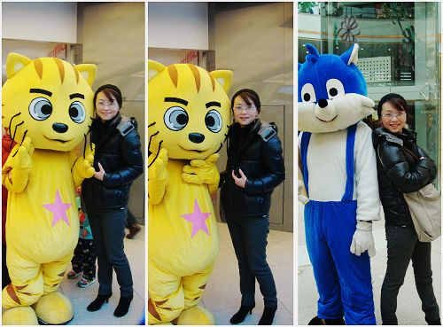
将近8点离开办公室，眉骨要裂开似的疼，内心烦躁，这样的状态不知会持续到何时，难道这就是今后工作的常态？一个人太想把所有工作都做得完满，就象要让所有人都开心一样不现实，甚至崩溃，不是吗？我用一周的时间喝完一瓶红酒，大惊喜小姐上周末还送了一瓶，明天等Sherry来，我们两就可以抱着这瓶红酒一解疲惫与烦忧，看上两部电影，过个放松的下午。
这一天让我感到安慰和快乐的是和Maggie、问问一起吃午饭，并且收到问问在HK购买的圣诞礼物：MUJI shower radio。Yeah！（咳咳，请各JM控制一下酸意）这下我真的可以在泡澡的时候听到音乐和新闻啦！以后无论何时何地都可以随身携带它，比如加班的周末，比如遛狗的路上，比如做饭的厨房，比如失眠的夜晚。。。随时随地。
我永远追赶不上文艺青年的脚步，连送礼物都无法比拟。但是这些都不重要，重要的是与她、她还有她们在一起度过的美好时光。祝我的女友们圣诞快乐，天天快乐！

还爱包装纸袋上健美的圣诞老头儿！瞧他那两只快站成“一”字的脚，一看就知道有芭蕾基础。

对所谓的节日已经没有任何感觉，对那些充满激情过节的人们仰视一下。朋友提前来电话邀请我参加今晚的家中party，据说还让公司的行政搜罗了小节目，朋友策划了整个平安夜的活动，我还是没有去。这个夜晚就象许多夜晚一样平常安静，对于现在的我也是一份美好。
晚上步行到超市买到计划中的黑色鞋油和鞋刷，鞋油2.5元一只，鞋刷4元，如果不是在超市购买，这样的价位真让人怀疑是假冒伪劣品。“哪种鞋油最好？”超市里忙着搬迁商品的店员说：“红鸟。”是的，超市里最好的鞋油是红鸟，只要2元。货币购买力越来越低的现况，能有这么便宜的商品是有点儿新鲜，但愿，它的质量比它的价格更能令人安慰。朋友在围脖里问为何不用透明鞋剂？家中早有ECCO好几种鞋剂，效果都不理想，所以试试用过去那种膏状的黑色鞋油，要把我的皮靴擦得锃亮锃亮的，擦得象CRV汽车那样的黑色大头皮鞋一样招摇，呵呵~
平安夜遛狗是不是会有些不同寻常呢？的确。远处不仅有烟火绽放天空，还有少年们的狼嚎，大概青春就象邻居家的狗一样，在钢琴声响起时适时地来个和弦伴唱，管他娘的音准还是旋律，凑个热闹也好。黑暗中有个人影缓慢地移动着脚步，土豆最先冲上前用被割掉后残留的声带沙哑的发出几声警告，在节日的夜晚，这个散步老人的身影显得落寞又凄凉。
狗狗们的平安夜餐是一瓶罐头+狗粮，最近它们的伙食好过我。因为工作忙家里已经一周没开火，在食堂每日花8元可以吃到一个大荤一个小荤及一个素菜的午饭，前天的大荤居然是三只小鸡爪，打菜的阿姨说本来规定只给打两只，还多给了一只呢，泪奔。。。承包食堂的生意人也忒抠了吧？唠叨完，这就擦我心爱的过膝靴去。
说到过膝靴，还要唠叨几句，昨晚见一伦敦回来的女孩儿，穿着ZARA的过膝靴，波西米亚风格的蚕丝长袖花衬衣，外面一件淡紫色皮草。她问：“你穿的是？”“Ninewest。”“哦，英国也有这个牌子。”多新鲜啊。她的先生学建筑出身，现在一家专业汽车杂志社主管中国区业务。据说对美食和时尚颇有要求，她被先生照顾得很好，每天能吃到不同花样的美食，并且精益求精地打扮自己和她。两人最最差的晚餐也是意大利面和皮蛋瘦肉粥。每天往返家和公司之间需要3小时路程，晚饭结束也要11点了。还要仰视一下她那位职业先生，除了品味和热情还需要充沛的精力，这样的男人在国内早绝种了。讨论了因为水质导致英国男人秃顶多，以及英国以貌取人的问题，真是这样吗？不过这个“貌”还有谈吐、气质等综合因素存在。“国内真是太好玩了，明天晚上我要和表妹去1912泡吧。。。”哦，1912，多么遥远的地方。
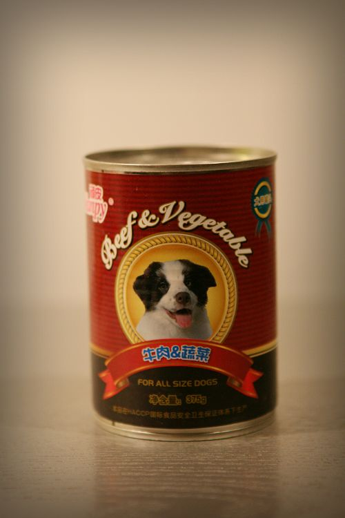